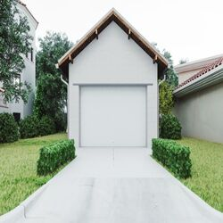

-
Signs to Replace Your Driveway Apron
Posted on July 26, 2023 by Abby Harris

Cracks, uneven surfaces, color loss, or deteriorated edges indicate you may need to replace your driveway apron with Houston concrete supply.
Do you have a cracked or crumbling driveway? Replacing your driveway apron–the area where your residential driveway meets the street pavement–calls for some careful decision-making. From choosing a durable Houston concrete supply to hiring a team skilled in production and placement, TEXAN Concrete Ready Mix can help you successfully improve your driveway.
Keep reading to find out what signs indicate you may need to replace your driveway apron. Remember, for the most longevity, using quality concrete is essential when replacing an old driveway apron! To get a Houston concrete supply quote for your project, contact our experts today.
Watch for Cracks in the Driveway Apron
When maintaining your driveway, pay attention to any cracks that develop. These small fissures are often the first indicator of damage to the concrete apron. While it may be tempting to brush them off as insignificant, it’s important to keep a close eye on them. Are they starting to widen or grow in length? These subtle changes may seem insignificant, but they could be warning signs of something more serious. By staying vigilant, you can prevent the problem from escalating and potentially costing you more in the long run.
Look for Uneven Surfaces in the Concrete
A bumpy or uneven driveway apron can be a major frustration. Not only does it make for a bumpy ride, but it can also be a safety hazard. If some areas are higher than others, it can be challenging to navigate with a vehicle without the risk of bottoming out. It can also raise the risk of trips and falls for members of your family or for people walking through the neighborhood, increasing your liability risk. If you have significant unevenness in your driveway apron, you should deal with it promptly. It’s always important to prioritize safety in any outdoor space.
Note the Color of Your Driveway Concrete
Concrete is known for its durability and strength, but it is not invincible. A telltale sign of concrete degradation is the loss of color. When the color of the concrete fades, it is more than just an aesthetic issue. It could indicate a problem with the concrete itself, particularly with its structural integrity. Fading color could mean that the concrete has been exposed to harsh elements or has been compromised by age. In some cases, replacement of the concrete with a durable Houston ready mix concrete supply product may be necessary to ensure the stability and longevity of your driveway.
Check for Deteriorating Edges of Your Driveway Apron
When the edges of your concrete driveway start to deteriorate, it can lead to significant structural damage and a hazardous environment. As the edges break down, they can create an uneven surface and cause tripping hazards. More importantly, deteriorating edges can cause water to seep underneath your driveway, compromising its foundation and leading to expensive repairs. Don’t take any chances with your safety and the structural integrity of your driveway. As soon as you notice any deterioration, call in your Houston concrete supply professionals to get it fixed promptly.
ouston Concrete Supply from TEXAN Concrete
There are several warning signs that you should be on the lookout for when it comes to your concrete driveway apron. Cracks, uneven surfaces, color loss, and deteriorating edges are all indicators that tell us when we should start to consider repair and or replacement of our driveways.
At TEXAN Concrete Ready Mix, we can provide you with quality materials and expertise so that your commercial or residential concrete project runs as smoothly as possible. Our team is trained to help you solve any issue you may encounter during production.
So if you are looking for Houston concrete supply, give us a call today! We will work with you every step of the way until your project is completed to perfection. Let us help make sure your concrete driveway apron is safe and beautiful for years to come.
This entry was posted in Concrete Repair or Replacement. Bookmark the permalink.